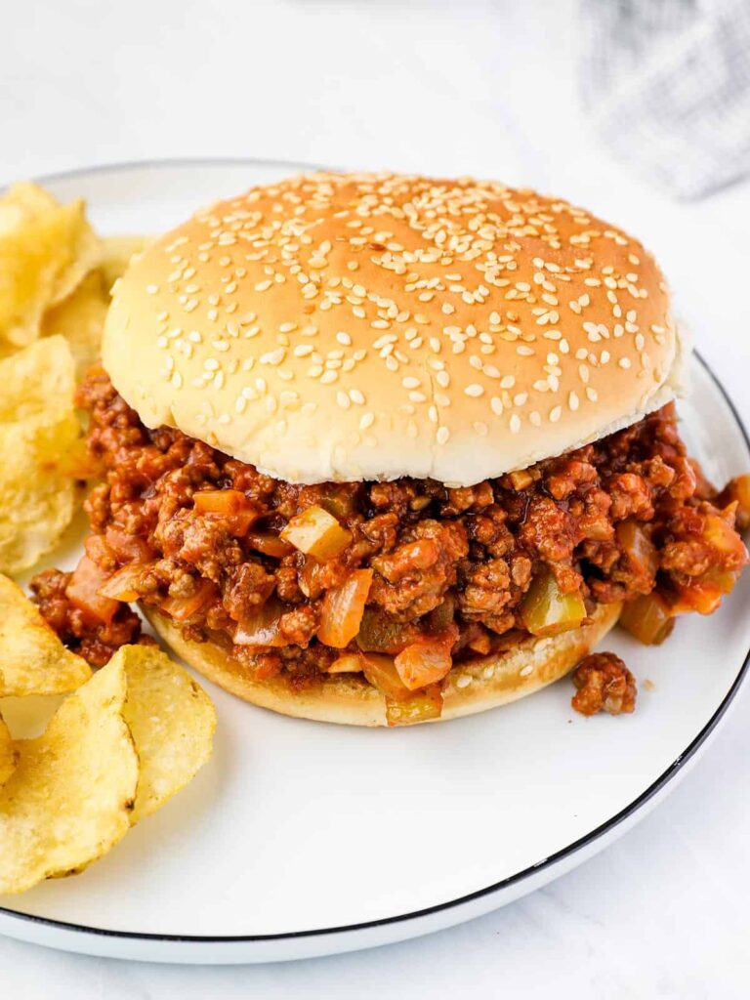

Sloppy Joes are loose meat sandwiches made with ground beef, peppers, and onions in a special tangy sauce. And thet special sauce is totally what makes them a sloppy Joe sandwich. Sloppy joe sauce is savory, tangy, and slightly sweet, similar to BBQ sauce, but less sweet and with a stronger tomato base
Finely dice the onion and bell pepper, and mince the garlic.
Add the olive oil and beef to a skillet and cook over medium heat until the beef is cooked through. Drain off any excess fat.
Add the onion, garlic, and bell pepper to the skillet with the beef. Continue to sauté until the onions are soft and translucent.
Finally, add the tomato sauce, tomato paste, vinegar, brown sugar Dijon, chili powder, Worcestershire sauce,and salt to the skillet. Stir to combine.
Allow the meat and sauce to simmer over medium-low for about 5 minutes.
Its mfing sloppy joe time